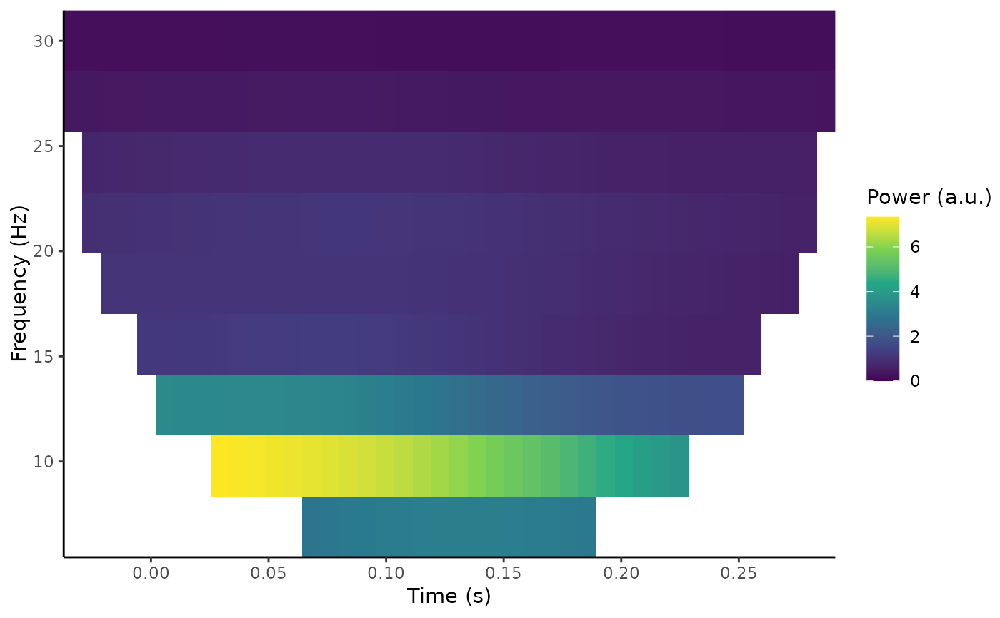
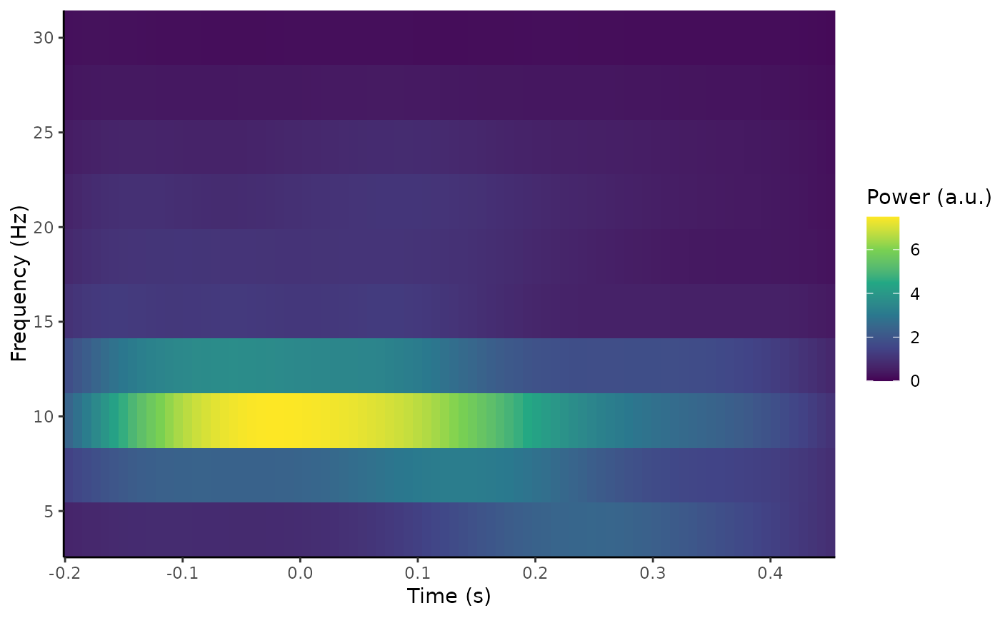

This function creates a time frequency representation of EEG time series data. Currently, it is possible to use either Morlet wavelets or Hanning tapers during the decomposition, which uses convolution in the frequency domain.
Usage
compute_tfr(data, ...)
# Default S3 method
compute_tfr(data, ...)
# S3 method for class 'eeg_epochs'
compute_tfr(
data,
method = "morlet",
foi,
n_freq,
spacing = "linear",
n_cycles = 7,
keep_trials = FALSE,
output = "power",
downsample = 1,
trim_edges = TRUE,
verbose = TRUE,
...
)
# S3 method for class 'eeg_evoked'
compute_tfr(
data,
method = "morlet",
foi,
n_freq,
spacing = "linear",
n_cycles = 7,
keep_trials = FALSE,
output = "power",
downsample = 1,
trim_edges = TRUE,
verbose = TRUE,
...
)Arguments
- data
An object of class
eeg_epochs.- ...
Further TFR parameters
- method
Time-frequency analysis method. Defaults to "morlet".
- foi
Frequencies of interest. Scalar or character vector of the lowest and highest frequency to resolve.
- n_freq
Number of frequencies to be resolved. Must be an integer number of frequencies.
- spacing
Use "linear" or "log" spacing for the frequency vector and number of cycles.
- n_cycles
Number of cycles at each frequency. If a single integer, use a constant number of cycles at each frequency. If a character vector of length 2, the number of cycles will scale with frequency from the minimum to the maximum.
- keep_trials
Keep single trials or average over them before returning. Defaults to FALSE.
- output
Sets whether output is power, phase, or fourier coefficients.
- downsample
Downsampling factor. Integer. Selects every n samples after performing time-frequency analysis on the full sampling rate data.
- trim_edges
Remove edges of time-frequency representation to avoid edge effects from overlap of wavelet with timepoints outside the epochs. Defaults to TRUE.
- verbose
Print informative messages in console.
Methods (by class)
compute_tfr(default): Default method for compute_tfrcompute_tfr(eeg_epochs): Default method forcompute_tfrcompute_tfr(eeg_evoked): Method foreeg_evokedobjects.
Author
Matt Craddock matt@mattcraddock.com
Examples
out <- compute_tfr(demo_epochs, method = "morlet", foi = c(4, 30), n_freq = 10, n_cycles = 3)
#> Computing TFR using Morlet wavelet convolution
#> Output frequencies using linear spacing: 4 6.89 9.78 12.67 15.56 18.44 21.33 24.22 27.11 30
#> Removing channel means per epoch...
#> Returning signal averaged over all trials.
out
#> Epoched EEG TFR data
#>
#> Frequency range : 4 6.89 9.78 12.67 15.56 18.44 21.33 24.22 27.11 30
#> Number of channels : 11
#> Electrode names : A5 A13 A21 A29 A31 B5 B6 B8 B16 B18 B26
#> Number of epochs : 1
#> Epoch limits : -0.197 - 0.451 seconds
#> Sampling rate : 128 Hz
out$freq_info$morlet_resolution
#> frequency sigma_f sigma_t n_cycles
#> 1 4.000000 1.333333 0.11936621 3
#> 2 6.888889 2.296296 0.06930941 3
#> 3 9.777778 3.259259 0.04883163 3
#> 4 12.666667 4.222222 0.03769459 3
#> 5 15.555556 5.185185 0.03069417 3
#> 6 18.444444 6.148148 0.02588665 3
#> 7 21.333333 7.111111 0.02238116 3
#> 8 24.222222 8.074074 0.01971185 3
#> 9 27.111111 9.037037 0.01761141 3
#> 10 30.000000 10.000000 0.01591549 3
out <- compute_tfr(demo_epochs, method = "morlet", foi = c(4, 30),
n_freq = 10, n_cycles = c(3, 10))
#> Computing TFR using Morlet wavelet convolution
#> Output frequencies using linear spacing: 4 6.89 9.78 12.67 15.56 18.44 21.33 24.22 27.11 30
#> Removing channel means per epoch...
#> Returning signal averaged over all trials.
out$freq_info$morlet_resolution
#> frequency sigma_f sigma_t n_cycles
#> 1 4.000000 1.333333 0.11936621 3.000000
#> 2 6.888889 1.823529 0.08727852 3.777778
#> 3 9.777778 2.146341 0.07415173 4.555556
#> 4 12.666667 2.375000 0.06701261 5.333333
#> 5 15.555556 2.545455 0.06252516 6.111111
#> 6 18.444444 2.677419 0.05944341 6.888889
#> 7 21.333333 2.782609 0.05719631 7.666667
#> 8 24.222222 2.868421 0.05548521 8.444444
#> 9 27.111111 2.939759 0.05413877 9.222222
#> 10 30.000000 3.000000 0.05305165 10.000000
plot_tfr(out)

out <- compute_tfr(demo_epochs, method = "morlet", foi = c(4, 30),
n_freq = 10, n_cycles = c(3, 10), trim_edges = FALSE)
#> Computing TFR using Morlet wavelet convolution
#> Output frequencies using linear spacing: 4 6.89 9.78 12.67 15.56 18.44 21.33 24.22 27.11 30
#> Removing channel means per epoch...
#> Returning signal averaged over all trials.
plot_tfr(out)
